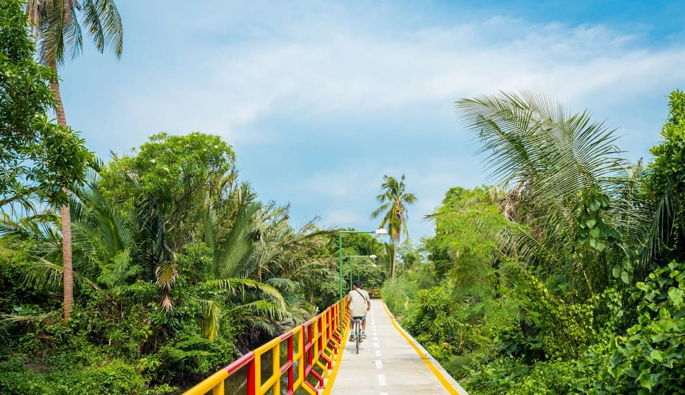
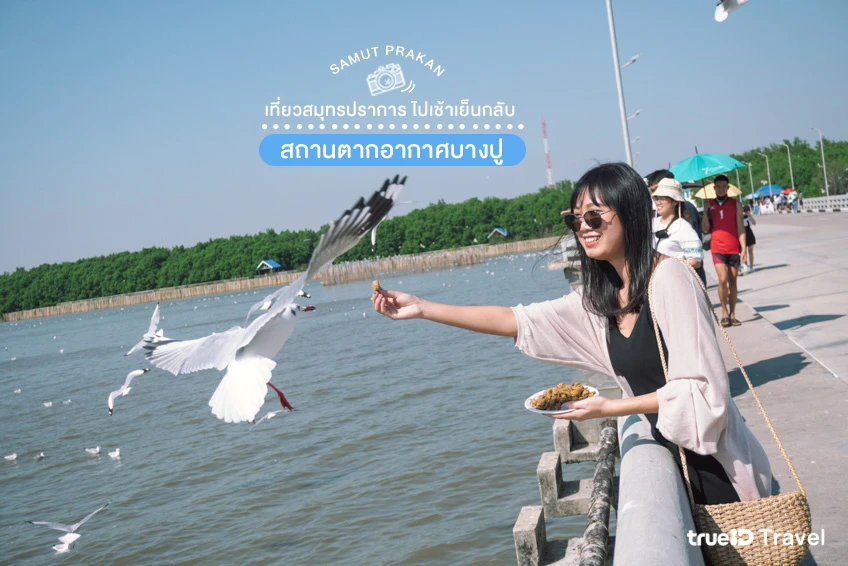

สถานที่น่าไปของจังหวัดสมุทรปราการ
1.บางกระเจ้า
บางกะเจ้า ปอดสีเขียวแห่งสมุทรปราการ เป็นสถานที่พักผ่อนหย่อนใจยอดนิยม ขึ้นชื่อเรื่องธรรมชาติร่มรื่น เหมาะสำหรับการปั่นจักรยาน (ค่าเช่าจักรยานวันละ 50 บาท) ชมวิว สูดอากาศบริสุทธิ์ สามารถเดินทางได้ทั้งรถส่วนตัว หรือสามารถนั่งรถโดยสารสาธารณะ มาลงที่ตลาดบางน้ำผึ้ง หรือนั่งเรือจากท่าเรือบางนามาลงที่ท่าเรือวัดบางน้ำผึ้งนอกก็ได้
- ค่าเช่าจักรยาน ชั่วโมงละ 20-50 บาท เช่าเหมาวัน 90-100 บาท
- ที่อยู่ : 73 ซอยวัดราษฎร์รังสรรค์ ตำบลบางกะเจ้า อำเภอพระประแดง จังหวัดสมุทรปราการ
- พิกัด : https://goo.gl/maps/dwSSHwKETgepZttr6
- เปิดให้เข้าชม : สวนศรีนครเขื่อนขันธุ์ 06.00-20.00 น.
- โทร : -
- เว็บไซต์ :-
2.บางปู
หากเอ่ยถึงเมืองปากน้ำ สมุทรปราการ สถานที่ท่องเที่ยวที่มีชื่อเสียงเป็นอันดับต้นๆ คือ สถานตากอากาศบางปู นั่นเองค่ะ ที่นี่เป็นที่เที่ยวพักผ่อนตากอากาศทางชายทะเลด้านอ่าวไทย ที่มีธรรมชาติอันอุดมสมบูรณ์ มีเส้นทางชมป่า ชมนกกว่า 200 ชนิด โดยเฉพาะ นกนางนวล หลายพันตัวที่อพยพหนีความหนาวเย็นจากไซบีเรียมาในช่วงต้นฤดูหนาวของทุกปี
- ที่อยู่ : ถนนสุขุมวิท ตำบลบางปูใหม่ อำเภอเมืองสมุทรปราการ จังหวัดสมุทรปราการ
- พิกัด : https://goo.gl/maps/51Xn3ju4FRx6YNBr9
- เปิดให้เข้าชม : 06.00-20.00 น.
- โทร : 0-2323-9911
- เว็บไซต์ : https://www.facebook.com/BangpuRecreationCenter
3.พิพิธภัณฑ์ช้างเอราวัณ

พิพิธภัณฑ์ช้างเอราวัณ อีกหนึ่ง ที่เที่ยวสวย สมุทรปราการ ที่ต้องไม่พลาดไปแวะชมกันค่ะ ที่นี่เกิดขึ้นด้วยเจตนารมย์และอุดมคติของ คุณเล็ก วิริยะพันธุ์ ซึ่งต้องการถ่ายทอดและปลูกฝังให้คนได้เข้าถึงศิลปะและศาสนาอันเป็นรากฐานของอารยธรรม เรียนรู้เรื่องราวของอดีต รู้จักคุณค่าของศิลปะที่เป็นมรดกตกทอดจากบรรพบุรุษ รวมถึงเผยแพร่ประเพณีและวัฒนธรรมของไทยนั่นเอง
- ที่อยู่ : 99/9 หมู่ 1 ถนนสุขุมวิท ตำบลบางเมืองใหม่ อำเภอเมืองสมุทรปราการ จังหวัดสมุทรปราการ
- พิกัด : https://goo.gl/maps/URkhKMbHMpLtB7nU8
- เปิดให้เข้าชม : 09.00-18.00 น.
- โทร : -
- เว็บไซต์ : https://www.facebook.com/ErawanMuseumSamutprakan
4.หอชมเมืองสมุทรปราการ

หอชมเมืองสมุทรปราการ เป็นที่เที่ยวชมเมืองวิวแม่น้ำสวยๆ 360 องศา ซึ่งตรงนี้เอง เราจะได้เห็นวิวสวยๆ ของทั้ง พระสมุทรเจดีย์ ป้อมผีเสื้อสมุทร บางกะเจ้า ป้อมพระจุลจอมเกล้า และ พิพิธภัณฑ์ช้างเอราวัณอีกด้วย แน่นอนว่า ถ่ายรูปสวยอลัง! ด้านในมีนิทรรศการเรื่องราวเป็นมาที่เกี่ยวกับเมืองสมุทรปราการชื่อว่า อุทยานการเรียนรู้อ่าวไทย ให้เราได้เดินชมเพลินๆ ค่ะ
- ที่อยู่ : ตำบลปากน้ำ อำเภอเมืองสมุทรปราการ จังหวัดสมุทรปราการ
- พิกัด : https://goo.gl/maps/hJE75nBizcy2gFEg9
- เปิดให้เข้าชม : วันอังคาร - อาทิตย์ และวันหยุดนักขัตฤกษ์ (ปิดวันจันทร์) 10.00-17.00 น. นิทรรศการ ร้อยเป็นเรื่อง เมืองปากน้ำ รับผู้เข้าชมรอบสุดท้าย 15.00 น.
- โทร : 09-8241-9495
- เว็บไซต์ : https://www.facebook.com/หอชมเมืองสมุทรปราการ
5.เมืองโบราณ สมุทรปราการ

มาเที่ยวที่เดียว เหมือนได้ไปเที่ยวทั่วไทยกันเลยค่ะ ที่ เมืองโบราณ สมุทรปราการ นี่เอง ที่เที่ยวทีไ่ด้จำลองเมืองไทยในอดีต รวบรวมศิลปะ ที่มีเอกลักษณ์โดดเด่นในยุคสมัยต่างๆ ตั้งแต่สมัยก่อนประวัติศาสตร์ ทวารวดี ศรีวิชัย ลพบุรี ล้านนา ล้านช้าง สุโขทัย อู่ทอง อยุธยา ธนบุรี จนกระทั่งถึงรัตนโกสินทร์ มาไว้ในที่เดียว
- ที่อยู่ :ถนนสุขุมวิท ตำบลบางปูใหม่ อำเภอเมืองสมุทรปราการ จังหวัดสมุทรปราการ
- พิกัด : https://goo.gl/maps/Df9bmKC3X7e6CteC9
- เปิดให้เข้าชม : 09.00-18.00 น.
- โทร : 0-2026-8800
- เว็บไซต์ : https://www.facebook.com/muangborantheancientcity